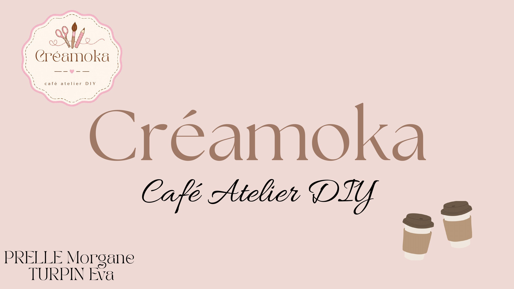

Créamoka, café atelier DIY
Projet de groupe : imaginer un café atelier créatif de A à Z, de l'identité visuelle à la campagne de lancement.

Contexte
Créamoka est un concept de café-atelier DIY imaginé à Saint-Denis : un lieu où l'on peut boire un café tout en participant à des activités créatives (poterie, peinture, atelier charms…). Ce projet a été réalisé en groupe avec Eva Turpin. Nous avons travaillé sur toutes les étapes, de la création de l'identité visuelle à la conception de la campagne de lancement.
Objectifs
- Apprendre à créer une marque de A à Z.
- Définir une identité visuelle et un positionnement.
- Identifier une cible et ses attentes.
- Développer une stratégie marketing et de communication.
- Créer des supports de communication pour promouvoir la marque.
- Apprendre à travailler en équipe et à gérer un projet.
Notre démarche
Nous avons travaillé en trois temps : définir l'univers (moodboard et logo), imaginer le lieu (avant/après de la devanture), puis créer les supports de lancement (flyer et story), et enfin, créer une vidéo/Reel généré par IA (création selon les consignes).
- Travail de groupe
- Canva
- Identité visuelle
- Campagne de lancement
Vidéo de présentation
Identité visuelle
Un univers doux et gourmand : rose poudré, lilas, beige, brun café et vert pastel. Le moodboard rassemble des lieux, des ateliers et des ambiances qui nous ont inspirées, avec des grains de café en motif. Le logo, en forme de médaillon festonné, associe ciseaux, pinceau et crayon pour évoquer la création, avec une typographie élégante. L’identité visuelle permet également de se démarquer des cafés classiques, d'attirer la clientèle et de faire comprendre le concept dès le premier regard.


Avant / après
Le local choisi est situé au 62 rue Pasteur, à Saint-Denis. Nous avons imaginé sa transformation : une enseigne rose poudré et brun, des vitrines chaleureuses avec plantes et tables rondes, une ardoise à l'entrée et les horaires d'ouverture affichés.


Campagne de lancement
Deux supports complémentaires : un flyer qui présente l'offre (café à 3,90 €, atelier DIY à 25 € les 2 heures) et l'adresse, et une story en mosaïque avec un calendrier du mois d'octobre pour annoncer l'ouverture.

Résultats & enseignements
- Importance d'une identité visuelle cohérente sur tous les supports (couleurs, logo, typographie).
- Les visuels avant/après aident les clients à se projeter et donnent envie de découvrir le lieu.
- Mettre en avant les prix et l'adresse rend l'offre plus claire et compréhensible.
- Adapter les publications aux attentes et aux intérêts de la cible.
- Garder un ton et un univers reconnaissables pour renforcer l'image de marque.
- Mettre en avant les activités permet de montrer ce qui rend le concept original.
- Le travail en groupe nécessite de s'accorder sur un univers commun et de bien répartir les tâches.